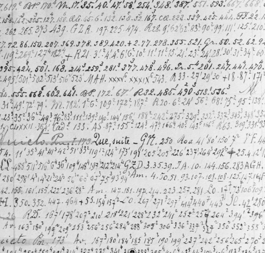

García Márquez, Gabriel. Desde 1973 cuando se reestructuró el Departamento de Lexicografía del Instituto Caro y Cuervo, Cien años de soledad se incorporó al listado de obras para seleccionar los ejemplos del Diccionario de Cuervo. En 1995, el presidente Ernesto Samper lo entregó a Gabriel García Márquez, por ser nuestro escritor por antonomasia. Por su parte, el Nobel colombiano lo postuló al Premio Príncipe de Asturias, calificándolo de “La novela de las palabras”. Es curioso anotar que tanto Cuervo como García Márquez vivieron del difícil arte de vender libros.
Género de educación. Si queremos conocer el género de educación que Rufino Cuervo Barreto quería para sus hijos, como si fuera visionario de la situación actual, veamos las instrucciones que sobre la materia dejó a su esposa, antes de viajar a Europa en 1835: “Si yo muriese, tú tienes el deber de educarlos: pónlos en una pensión o casa de educación, recomendando con particularidad que aprendan los principios de moral y de religión, la gramática castellana, la aritmética, el dibujo lineal y una buena escritura; cuida después de que aprendan algún arte u oficio, sea cual fuere, con tal de que tengan una ocupación honesta con que subsistir. No tengo la vana pretensión de que mis hijos ocupen puesto elevados en la sociedad, ni tampoco quiero que sigan con la carrera de la medicina o del foro, como lo están haciendo casi todos nuestros jóvenes. La patria no necesita de muchos médicos y abogados, sino de ciudadanos laboriosos que cultiven los campos, mejoren la industria y transporten nuestros frutos a los mercados extranjeros. No economices gasto ni sacrificio alguno para educar a nuestros hijos: vende lo más precioso que tengas, porque aun cuando no les dejes bienes de fortuna, ellos tendrán siempre lo bastante con la buena educación”[1].
González de la Calle, Pedro Urbano. La revisión minuciosa de los documentos dejados por Cuervo le permitió a González de la Calle plantear los lineamientos esenciales para la continuación del Diccionario de construcción y regimen.
Gramática latina. Publicada en Bogotá en 1867 por M. A. Caro y R. J. Cuervo. A los dos años se agotó la primera edición dando así muestra clara de la buena acogida. En 1882 el secretario de la Real Academia Española, Manuel Tamayo y Baus, al presentar un informe sobre la Gramática latina escrita por D. Francisco Jiménez Lomas, dice: “Quizá hubiera sido muy útil que el autor consultase de vez en cuando la muy excelente [gramática] de nuestros doctos académicos correspondientes D. Miguel Antonio Caro y D. Rufino José Cuervo, impresa años hace en Bogotá; obra magistral y la mejor de su género en nuestro idioma”[2]. La elaboración de la Gramática Latina nos permite advertir que el conocimiento pleno de la lengua castellana debe comprender un estudio minucioso de la lengua madre: “Quien quiera estudiar bien el castellano, necesita empezar por el principio, que es el latín”[3]. Jorge Páramo Pomareda la reeditó para el Instituto en 1972.
Gramática descriptiva de la lengua española. Esta Gramática dirigida por Ignacio Bosque y Violeta Demonte, publicada en 1999, es la más detallada que se haya escrito sobre nuestra lengua, y una de las más exhaustivas que se haya publicado para cualquier idioma, con sus 78 capítulos y sus densos tres tomos que suman 5. 350 páginas. En el abigarrado banco de datos que conforma el índice de autores, R. J. Cuervo es citado así: De las Apuntaciones hay referencias en los capítulos 4, 19, 26, 27, 40, 44, 65, 72, 75 y 76. Del Diccionario de Construcción y Régimen: 1, 2, 4, 5, 7, 9, 11, 15, 16, 21, 27, 28, 29, 32, 34, 37, 41, 43, 51, 52, 56, 57, 59, 62, 63, 67 y 75. De las Notas a la gramática de Bello: 20, 21, 26, 27, 35, 36, 41, 42, 44, 50, 53, 60 y 62. También encontramos referencias de Las segundas personas del plural, de Los casos proclíticos y enclíticos, de Sobre el carácter del infinitivo y de Sobre los usos del sufijo –o.
Grandeza de Cuervo. En la oración pronunciada por Tomás Cadavid Restrepo, leemos: “Sentir que en el fondo del alma arde la llama del ideal; amar la verdad y la hermosura; subir sin desmayos en la agria pendiente que conduce a la cima iluminada; clavar el corazón en la cruz de todas las abnegaciones; dejar la patria, la familia, los amigos para encerrarse como un asceta en la celda de estudio; cerrar ojos y oídos a cuanto no sea elevado y puro; pasar meses y años sin descanso; velar miles de noches, con la cabeza pesquisidora doblada sobre el libro y el papel leyendo e investigando, por el solo deseo de servir en su mesa generosa el pan del saber a cuantos lo busquen, esto, señores académicos, es ser grande, esto es embellecer la vida, es ser poeta, es ser inmortal”[4].
Guitarte, Guillermo Luis. Este ilustre filólogo y lingüista argentino, profesor del Seminario Andrés Bello del Instituto Caro y Cuervo publicó algunos artículos sobre el pensamiento de R. J. Cuervo, y se le considera como uno de los más destacados conocedores de su obra. Estos son: Cuervo, Henríquez Ureña y la polémica sobre el andalucismo de América, en Vox Románica, xvii (1958), págs. 363-416. Reimpreso en Thesavrvs, Bicc, xiv (1959), págs. 20-81. El origen del pensamiento de Rufino José Cuervo sobre la suerte del español de América. En: Logos Semantikos. Studia Lingüística in honorem Eugenio Coseriu 1921-1981, vol. 1 (Separata). Madrid: Gredos, 1981, págs. 435-446. El camino de Cuervo al español de América. En: Philologica Hispaniensia in honorem Manuel Alvar, i, Gredos, Madrid, 1983, págs. 243-318.
* * *
[1] Cuervo, Obras, 1987, iv, 763.
[2] Caro y Cuervo, 1972, xlvi.
[3] Caro y Cuervo, 1972, 32.
[4] Anuario, xi, 231.
